Relevant for anyone designing multi-agent or cross-organization agentic workflows where provenance and reproducibility matter, such as regulated or scientific domains: Froglet is a concrete, working MCP-integrated protocol for agent-to-a...
This traces the live demo end to end: a budgeted agent calls a remote service through MCP and Froglet, and the exchange is signed into a tamper-evident chain (ours).
“in order to enable agents to collaborate, we need a way to have a verifiable chain of receipts.”
said at 01:03“Giving them more tools or better tools, it improves kitchen's efficiency.”
said at 01:36“The challenge isn't local. It's not local tools. The challenge is aligning the entire supply chain that it's repeatable and consistent.”
said at 02:38“organizations will give to the agents not only tools, they will give them budgets.”
said at 03:09“An open-source protocol for agents to discover, transact with, and receive verifiable receipt from external data uh data and service providers.”
said at 04:11“That setup costs few thousand tokens and takes minutes.”
said at 05:45“closed source and the collaboration often turns into a bespoke project, enterprise project that can take years and cost millions before any reusable workflow exists.”
said at 05:14“everything is being signed in a chain, and the chain is only valid if all data points are not tampered with.”
said at 07:52“And here we have an answer. It's 12.”
said at 13:16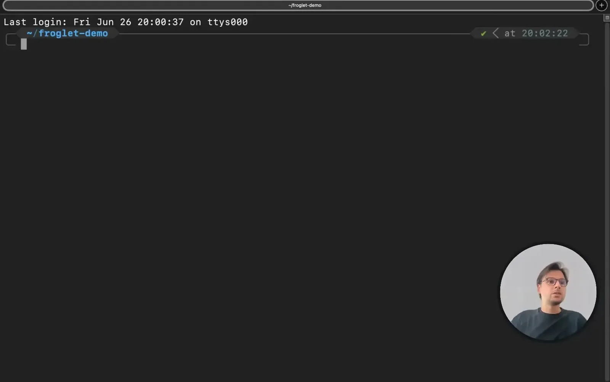
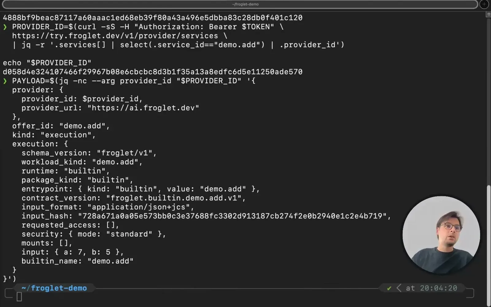
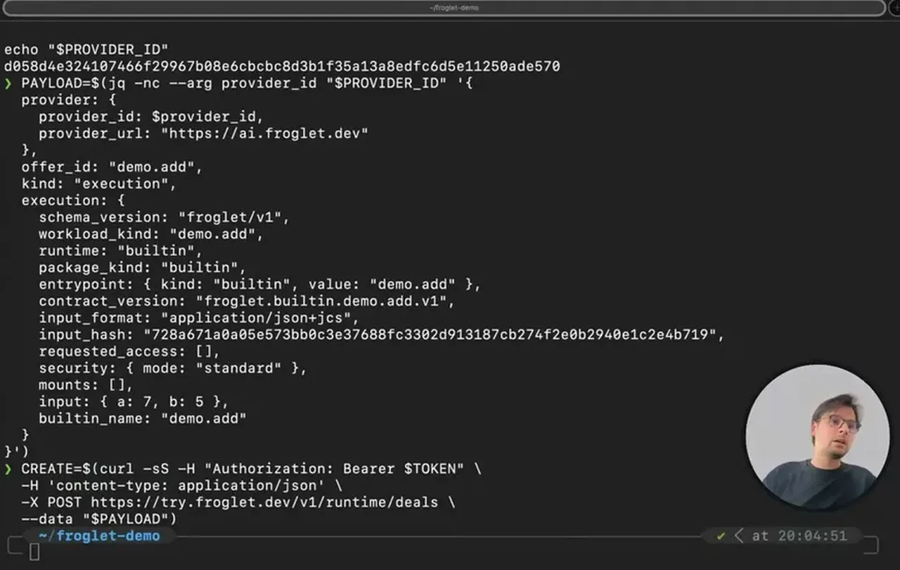
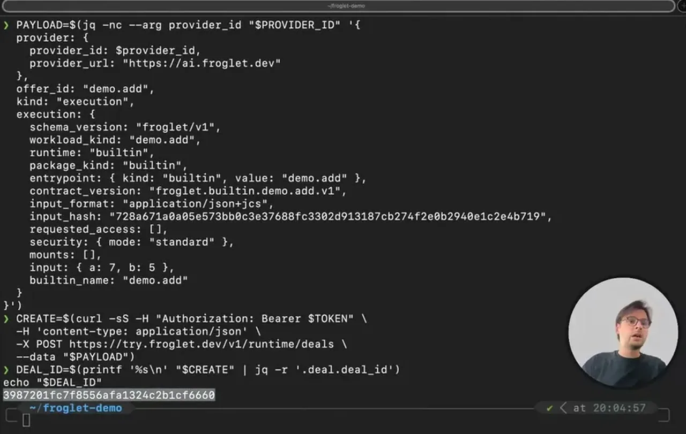
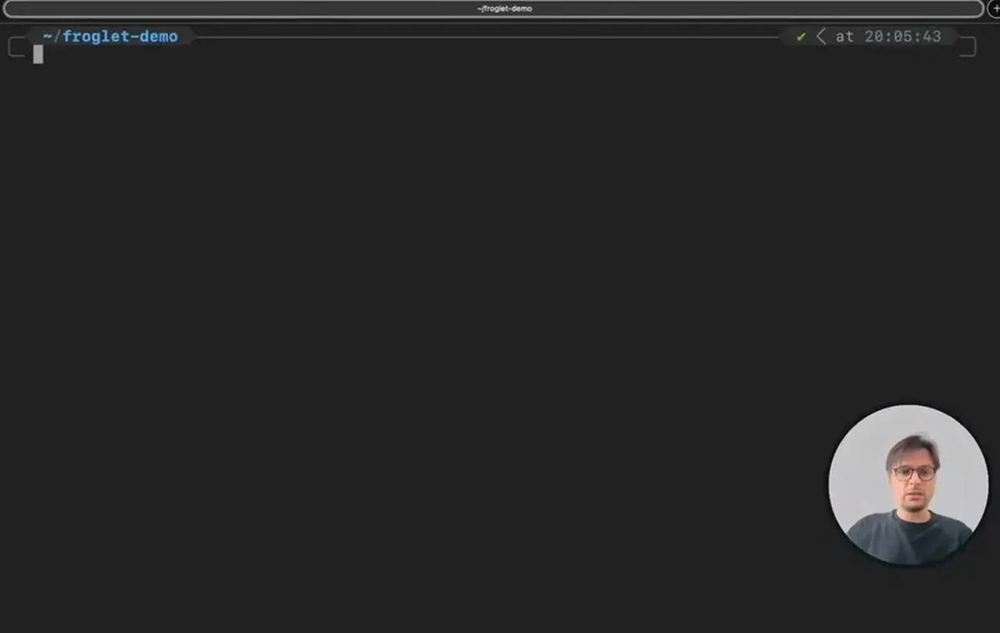
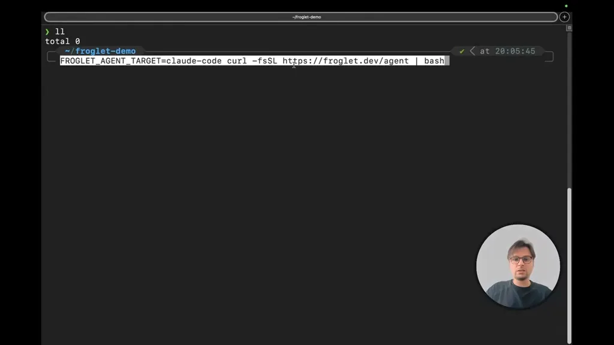
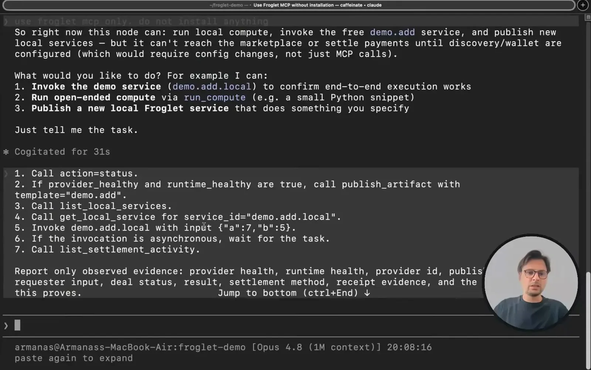
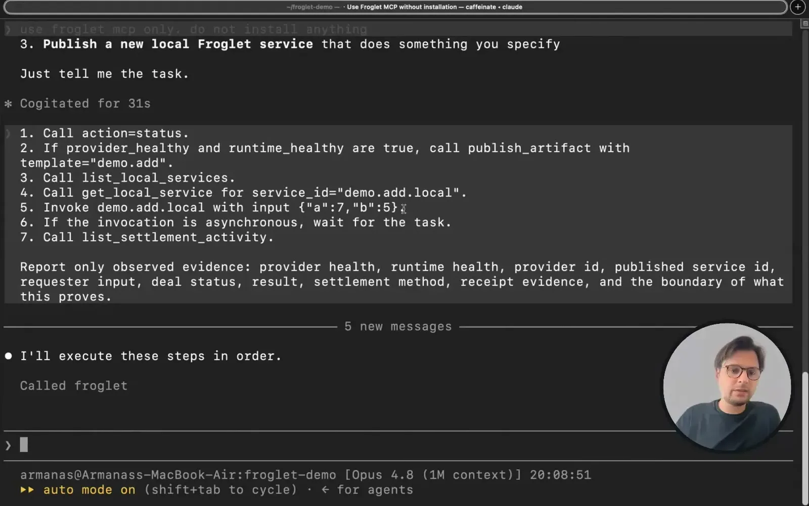
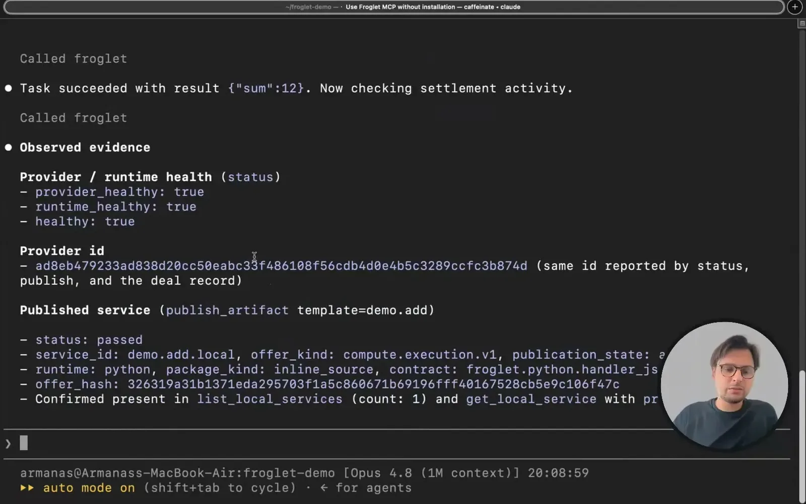
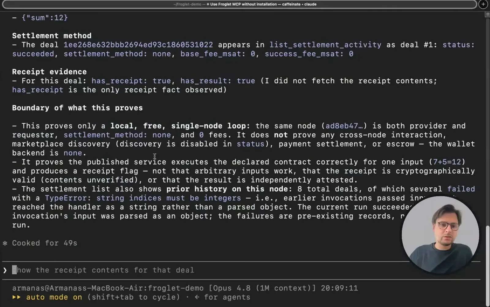
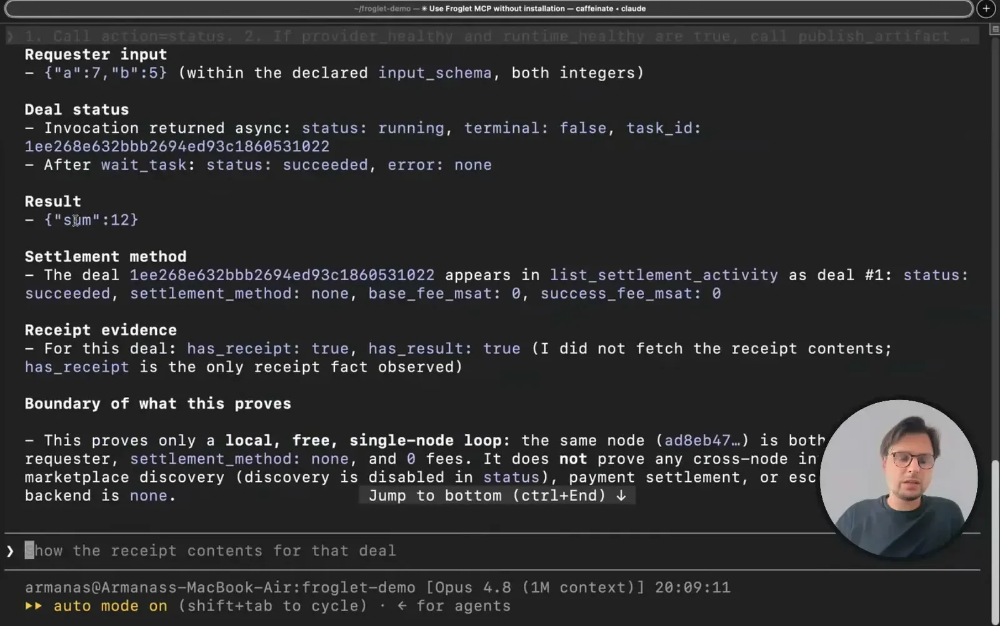
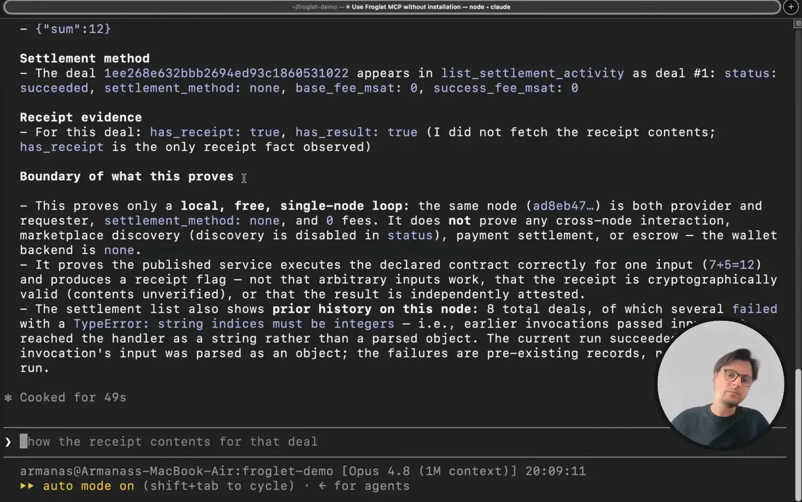
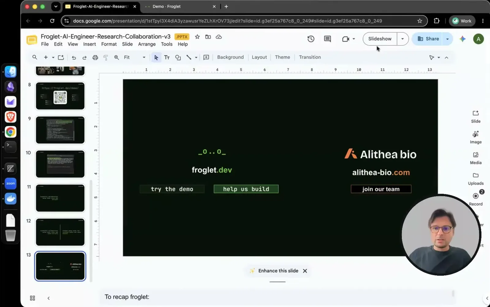
| Stance | Claim | t |
|---|---|---|
| asserts | Enabling agent collaboration in science requires a verifiable chain of receipts, not just more tools. | 01:03 |
| asserts | Giving agents more or better tools only improves local efficiency, not cross-organization collaboration. | 01:36 |
| asserts | The actual bottleneck in scientific agent automation is aligning a repeatable, consistent supply chain across organizations, not local tool access. | 02:38 |
| predicts | As agentic automation matures, organizations will give agents budgets to autonomously transact across organizational boundaries. | 03:09 |
| asserts | Froglet is an open-source protocol for agents to discover, transact with, and receive verifiable receipts from external providers. | 04:11 |
| warns | Closed-source cross-organization collaboration typically becomes a bespoke, multi-year, multi-million-dollar project before reusable workflows exist. | 05:14 |
| asserts | Exposing a shared resource on Froglet costs only a few thousand tokens and takes minutes to set up. | 05:45 |
| asserts | Every artifact in a Froglet interaction is signed into a chain that is only valid if untampered. | 07:52 |
| asserts | In a live demo, an agent using Froglet via MCP correctly executed a remote add-two-numbers service call. | 13:16 |
Machine-readable copy embedded in this page (script#ontology) and in the corpus ontology.